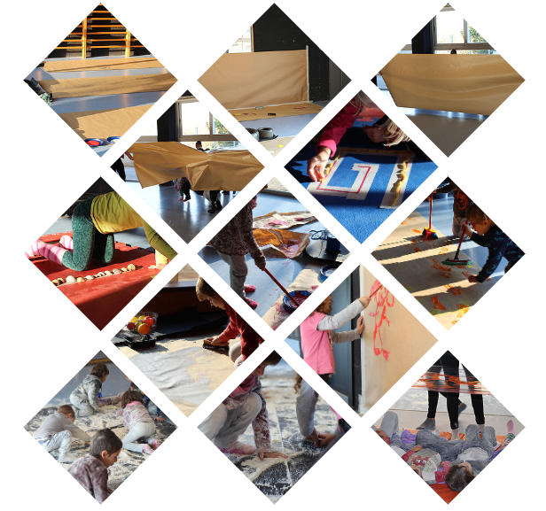

Experiencia: prácticas y extraescolares.
"Education is the most powerful weapon which you can use to change the world".
Nelson Mandela
Nelson Mandela
PRÁCTICAS DURANTE EL GRADO DE EDUCACIÓN INFANTIL
Durante el Grado de Educación Infantil he realizado cuatro PRACTICUMS en diferentes escuelas públicas de Sabadell, tanto guarderías como centros de Infantil y Primaria. El primero de este fue tan sólo de una semana, los tres siguientes fueron de entre unos dos y tres meses. En cada uno de estos tres tuve que realizar un proyecto, es decir, diseñar una serie de sesiones o actividades con los niños. En el siguiente Power Point os muestro una pequeña pincelada de lo que fueron estos proyectos, entre los que se encuentran una sala para experimentar con la luz y la oscuridad o una sala de arte.
MAESTRA DE FRANCÉS COMO ACTIVIDAD EXTRAESCOLAR
Desde el Noviembre de 2015 y hasta el Enero de 2017 he estado trabajando como profesora de la extraescolar de francés en la escuela pública Miquel Martí y polo de Sabadell. Era trabajadora de la empresa 5passes, encargada de llevar a cabo estas actividades extraescolares, y el grupo de niños era de entre 8 y 10 años.
El trabajo consistía en elaborar proyectos mediante los cuales los niños aprendieran francés mediante actividades artísticas / plásticas, matemáticas, de lenguaje y físicas / aire libre. Voy llevar a cabo proyectos relacionados con temas como la magia, juegos del mundo o la ciencia.
El trabajo consistía en elaborar proyectos mediante los cuales los niños aprendieran francés mediante actividades artísticas / plásticas, matemáticas, de lenguaje y físicas / aire libre. Voy llevar a cabo proyectos relacionados con temas como la magia, juegos del mundo o la ciencia.
DISEÑAR SESIONES DE PSICOMOTRICIDAD PARA ESCUELAS
Como trabajo de la universidad he podido vivir la experiencia de diseñar, junto con otras compañeras, sesiones de psicomotricidad con niños de entre 3 y 6 años, siguiendo la pedagogía de Acouturier. Además, de trabajar en la documentación de estas con el fin de poder tener material para poder analizar, reflexionar y COMPARTIR
